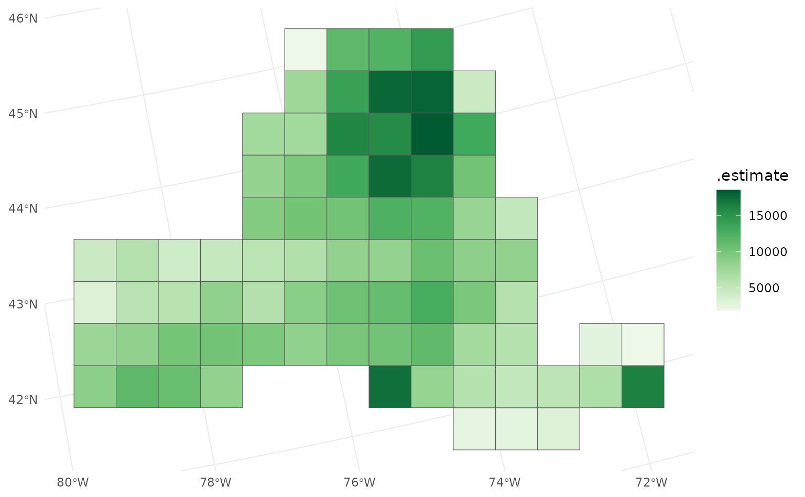
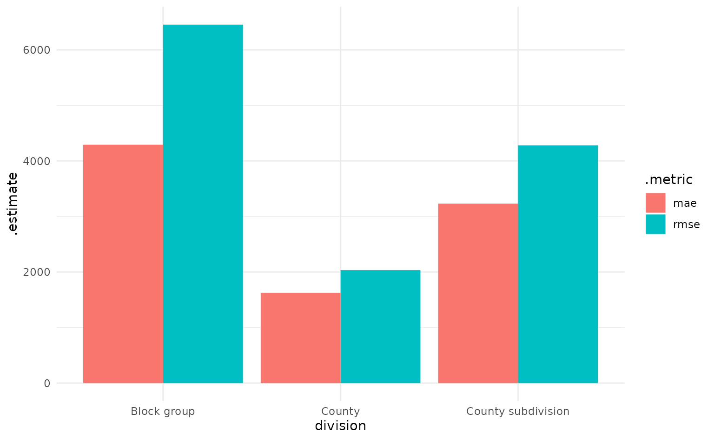

Multi-scale model assessment
Source:vignettes/multi-scale-assessment.Rmd
multi-scale-assessment.RmdThis vignette walks through how to use waywiser to assess model predictions at multiple spatial scales. The data and code here are adapted from the tidymodels multi-scale assessment tutorial. However, that tutorial performs a cross-validation procedure at each scale of aggregation, meaning that you’re measuring how well your model does when both trained and evaluated at multiple scales of aggregation; this vignette focuses instead on evaluating a single model’s predictions across multiple scales.
We’re going to use the ny_trees data in waywiser,
adapted from that post. First things first, we’ll set up our
environment, loading a few packages and telling sf to download the
coordinate reference system for our data, if needed:
library(sf)
#> Linking to GEOS 3.10.2, GDAL 3.4.1, PROJ 8.2.1; sf_use_s2() is TRUE
library(tidyr)
library(dplyr)
#>
#> Attaching package: 'dplyr'
#> The following objects are masked from 'package:stats':
#>
#> filter, lag
#> The following objects are masked from 'package:base':
#>
#> intersect, setdiff, setequal, union
library(waywiser)
invisible(sf_proj_network(TRUE))The data we’re working with is extremely simple, reflecting the number of trees and amount of aboveground biomass (“AGB”, the total amount of aboveground woody bits) at a number of plots across New York State. We can plot it to see that there’s some obvious spatial dependence in this data – certain regions have clusters of much higher AGB values, while other areas (such as the area around New York City to the south) have clusters of much lower AGB.
library(ggplot2)
ny_trees %>%
ggplot() +
geom_sf(aes(color = agb), alpha = 0.4) +
scale_color_distiller(palette = "Greens", direction = 1)
Because our focus here is on model assessment, not model fitting, we’re going to use an extremely simple linear regression to try and model AGB across the state. We’ll predict AGB as being a linear function of the number of trees at each plot, and then we’re going to use this model to predict expected AGB:
Now we’re ready to perform our multi-scale assessments. The
ww_multi_scale() function supports two different methods
for performing assessments: first, you can pass arguments to
sf::st_make_grid() (via ...), specifying the
sort of grids that you want to make. For instance, if we wanted to make
grids with apothems (the distance from the middle of a grid cell to the
middle of its sides) ranging from 10km to 100km long, we can call the
function like this:
cell_sizes <- seq(10, 100, 10) * 1000
ny_multi_scale <- ww_multi_scale(
ny_trees,
agb,
predicted,
cellsize = cell_sizes
)
ny_multi_scale
#> # A tibble: 20 × 6
#> .metric .estimator .estimate .grid_args .grid .notes
#> <chr> <chr> <dbl> <list> <list> <list>
#> 1 rmse standard 5077. <tibble [1 × 1]> <sf [3,350 × 3]> <tibble>
#> 2 mae standard 3808. <tibble [1 × 1]> <sf [3,350 × 3]> <tibble>
#> 3 rmse standard 3404. <tibble [1 × 1]> <sf [850 × 3]> <tibble>
#> 4 mae standard 2613. <tibble [1 × 1]> <sf [850 × 3]> <tibble>
#> 5 rmse standard 2893. <tibble [1 × 1]> <sf [391 × 3]> <tibble>
#> 6 mae standard 2197. <tibble [1 × 1]> <sf [391 × 3]> <tibble>
#> 7 rmse standard 2702. <tibble [1 × 1]> <sf [221 × 3]> <tibble>
#> 8 mae standard 2132. <tibble [1 × 1]> <sf [221 × 3]> <tibble>
#> 9 rmse standard 2541. <tibble [1 × 1]> <sf [140 × 3]> <tibble>
#> 10 mae standard 2032. <tibble [1 × 1]> <sf [140 × 3]> <tibble>
#> 11 rmse standard 2482. <tibble [1 × 1]> <sf [108 × 3]> <tibble>
#> 12 mae standard 1981. <tibble [1 × 1]> <sf [108 × 3]> <tibble>
#> 13 rmse standard 3517. <tibble [1 × 1]> <sf [80 × 3]> <tibble>
#> 14 mae standard 2294. <tibble [1 × 1]> <sf [80 × 3]> <tibble>
#> 15 rmse standard 2624. <tibble [1 × 1]> <sf [63 × 3]> <tibble>
#> 16 mae standard 2038. <tibble [1 × 1]> <sf [63 × 3]> <tibble>
#> 17 rmse standard 2101. <tibble [1 × 1]> <sf [48 × 3]> <tibble>
#> 18 mae standard 1664. <tibble [1 × 1]> <sf [48 × 3]> <tibble>
#> 19 rmse standard 2672. <tibble [1 × 1]> <sf [35 × 3]> <tibble>
#> 20 mae standard 1955. <tibble [1 × 1]> <sf [35 × 3]> <tibble>We’ve now got a tibble with estimates for our model’s RMSE and MAE at each scale of aggregation! We can use this information to better understand how our model does when predictions are being aggregated across larger units than a single plot; for instance, our model generally does better at larger scales of aggregation:
ny_multi_scale %>%
unnest(.grid_args) %>%
ggplot(aes(x = cellsize, y = .estimate, color = .metric)) +
geom_line()
Note that we used the .grid_args column, which stores
the arguments we used to make the grid, to associate our performance
estimates with their corresponding cellsize.
In addition to our top-level performance estimates, our
ny_multi_scale object also includes our true and estimated
AGB, aggregated to each scale, in the .grid column. This
lets us easily check what our predictions look like at each level of
aggregation:
ny_multi_scale$.grid[[9]] %>%
filter(!is.na(.estimate)) %>%
ggplot(aes(fill = .estimate)) +
geom_sf() +
scale_fill_distiller(palette = "Greens", direction = 1)
In addition to specifying systematic grids via
sf::st_make_grid(), ww_multi_scale() also
allows you to provide your own aggregation units. For instance, we can
use the tigris package to download census block group
boundaries, as well as county and county subdivision boundaries, for the
state of New York:
suppressPackageStartupMessages(library(tigris))
ny_block_groups <- block_groups("NY")
ny_county_subdivisions <- county_subdivisions("NY")
ny_counties <- counties("NY")We can then provide those sf objects straight to
ww_multi_scale:
ny_division_assessment <- ww_multi_scale(
ny_trees,
agb,
predicted,
grids = list(
ny_block_groups,
ny_county_subdivisions,
ny_counties
)
)
ny_division_assessment %>%
mutate(
division = rep(c("Block group", "County subdivision", "County"), each = 2)
) %>%
ggplot(aes(x = division, y = .estimate, fill = .metric)) +
geom_col(position = position_dodge())
By providing grids directly to ww_multi_scale(), we can
see how well our model performs when we aggregate predictions to more
semantically meaningful levels than the systematic grids.